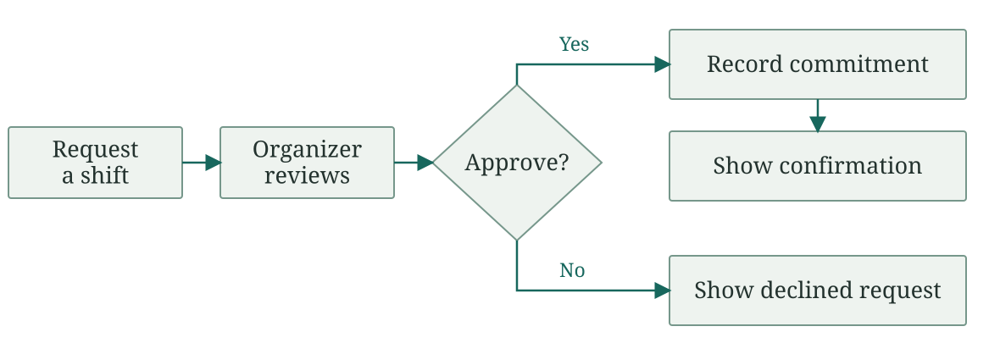
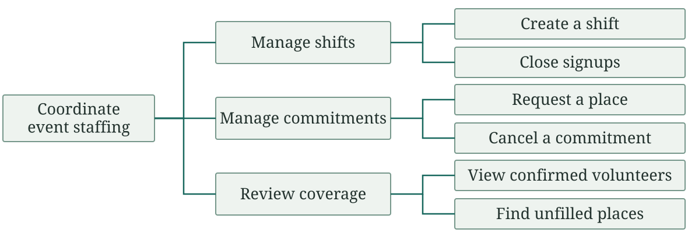

Software Engineering
Enough shared understanding to build something useful
Gregory S. DeLozier, PhD
“The perfect is the enemy of the good.”
Agree on a useful next step.
Keep open questions visible.
| Person | What matters to them |
|---|---|
| Volunteer | Am I confirmed? |
| Organizer | Which shifts are uncovered? |
| Treasurer | What will this cost? |
| Next year’s officers | Can we keep it running? |
| Approach | Starting point |
|---|---|
| Ask about an actual event | “Tell me about the last cancellation.” |
| Watch the work | “Show me how you update the schedule.” |
| Try a rough sketch | “Where do I approve them?” |
What did the first description leave out?
| Level | Example |
|---|---|
| Need | “I need to know I’m on the schedule.” |
| Requirement | View my confirmed event and shift time |
| Design choice | A green checkmark beside my name |
What does the checkmark promise?

Does a request reserve a place?

Lines mean “includes,” not “happens next.”
| Basic function | Safety constraint |
|---|---|
| Move people from place to place | Must not catch fire in a collision at parking-lot speed |
It must be a car, but it also must be an acceptable car.
Must not be flammable.
Functional or nonfunctional?
Important or not important?
| Product | Function | Constraint |
|---|---|---|
| Candy bar | Food to eat | No mold |
| Nerf gun | Fire foam darts | Below a specified velocity |
| Rocket | Carry a payload into flight | No toxic fuel dropped on the ground |
Performing the function is only part of meeting the requirements.
| Vague request | A useful question |
|---|---|
| Reliable | What survives a restart? |
| Private | Who may see contact details? |
| Easy to use | Can a new member sign up without help? |
Find out what acceptable means here.
“Automatically notify everyone whenever anything changes.”
A proposal: when a confirmed volunteer cancels, email the event organizer immediately.
Who needs to know what, and when?
| Volunteer | Organizer |
|---|---|
| “My plans can change.” | “I need dependable coverage.” |
What should happen to a late cancellation?
The event is in ten days.
The budget is zero.
Which useful part can be ready?
| Validation | Verification |
|---|---|
| Does this solve the actual problem? | Does it behave as specified? |
| Volunteers know whether they are confirmed | Cancellation follows the agreed rule |
A correctly built request form can still leave everyone uncertain.
“People should be able to cancel, but I can’t have everyone disappearing just before the event.”
Propose a rule. Mark it as a proposal.
What example would reveal a disagreement?
Agree on what the next useful piece should do.
Record the questions that remain open.
Leave people a fair chance to finish work they can be proud of.